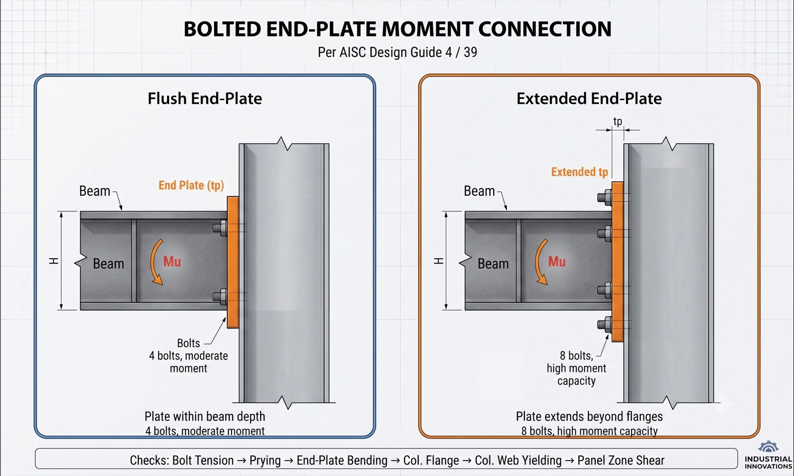
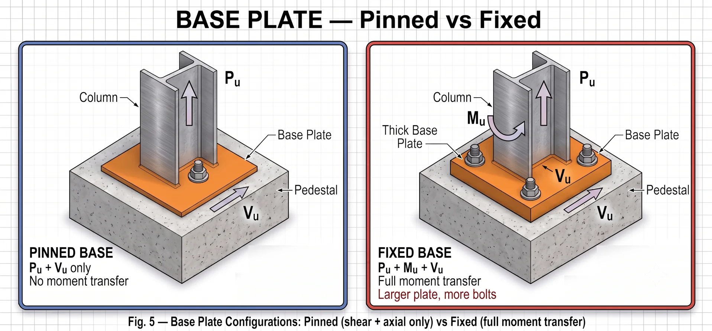

8. Beam-to-column connections
8.1. Connection philosophy for pipe racks
- Bolted connections preferred — minimise field welding for speed and quality.
- Transverse direction: moment connections (rigid frames).
- Longitudinal direction: shear connections (beams act as struts or are braced).
- All connections must transfer: shear + moment (if rigid) + axial (if strut).
8.2. End-plate moment connection (most common)

- Type: flush or extended end-plate.
- Reference: AISC Design Guide 4 / 39.
Design steps:
- 1. Determine required moment (Mu) and shear (Vu) at the connection.
- 2. Select bolt configuration (4-bolt, 8-bolt).
- 3. Calculate end-plate thickness (yield-line method).
- 4. Check bolt tension (including prying action).
- 5. Check column flange bending / web yielding / web crippling.
- 6. Add stiffeners if the column is inadequate.
Key design checks
| Check | What to verify |
|---|---|
| Bolt tension | Tb ≥ Tu (including prying) |
| End-plate bending | tp ≥ required (yield-line) |
| Column flange bending | tf ≥ required, or add stiffeners |
| Column web yielding | Rn ≥ beam flange force |
| Column web crippling | Rn ≥ beam flange force |
| Column web panel zone shear | Rv ≥ required |
| Shear at bolt group | Rn ≥ Vu |
8.3. Shear connection (simple connection)
- Used for: non-moment beams, struts, secondary framing.
- Types: single/double angle, shear tab (single plate), end-plate shear.
- Reference: AISC Manual Part 10.
- Design checks: bolt shear, bearing, net section, block shear.
9. Base plate & anchor bolt design
9.1. Base plate design per AISC Design Guide 1

| Type | Moment transfer | When to use |
|---|---|---|
| Pinned base | No moment (shear + axial only) | Top of column has a moment connection to the beam |
| Fixed base | Transfers moment to the foundation | Cantilever columns, tall racks, large lateral loads |
9.2. Fixed base design steps
- 1. Determine loads: Pu (axial), Mu (moment), Vu (shear).
- 2. Base plate size (B × N): must fit within the column footprint + clearance; check concrete bearing fp ≤ φ(0.85f′c)√(A₂/A₁).
- 3. Base plate thickness (tp): based on bending of the plate cantilever (m, n dimensions); simplified tp = 2.11 × √(Mu,plate / (Fy × B)).
- 4. Anchor bolts: tension Tu = Mu/d − Pu/nbolts (for small axial); shear transferred by friction, bearing or shear lugs.
- 5. Anchor bolt embedment: per ACI 318 Chapter 17 (anchorage to concrete).
9.3. Anchor bolt checks (ACI 318 Ch.17)
| Failure mode | What to check |
|---|---|
| Steel tension | Bolt tensile capacity |
| Concrete breakout (tension) | Cone pullout, edge effects |
| Concrete pullout | Bearing on bolt head/nut |
| Steel shear | Bolt shear capacity |
| Concrete breakout (shear) | Edge distance, pier size |
| Concrete pryout | Short bolts |
10. Bracing design
10.1. Vertical bracing (longitudinal)
- Purpose: resist longitudinal lateral loads (friction, wind, seismic).
- Types: X-bracing (most common), inverted V (chevron), single diagonal.
- Location: every 3–5 bays. Coordinate with piping expansion loops.
10.2. Design checks for bracing members
Tension member: Pn = Fy × Ag (yielding)
Pn = Fu × Ae (rupture)
Compression member: Pn = Fcr × Ag (buckling — AISC Ch. E)
Slenderness: KL/r ≤ 200 (compression)
L/r ≤ 300 (tension — recommended)10.3. Horizontal struts
- Connect bents at beam level in the longitudinal direction.
- Must resist: friction force, tributary wind, strut force from the bracing.
- Often designed as compression members (they can buckle when the friction load reverses).
- Effective length: typically KL = the full bay length between bents.
10.4. Bracing connection (gusset plate)
- Gusset plates must transfer the brace force to the beam-column joint.
- Whitmore section for tension/compression capacity.
- Thornton method for gusset plate buckling.
- Block shear check at the bolt group.
- Clearance: ensure the 2t linear clearance (AISC requirement).
11. Practical detailing — tips from experience
11.1. Member orientation
- Columns: strong axis (x-x) oriented in the transverse direction — moment frame action is transverse, so maximum bending is about the strong axis.
- Beams: strong axis resists gravity loads (obvious).
- Struts: weak-axis buckling must be checked — it often controls.
11.2. Future expansion
- Design for 10–25% additional pipe load capacity.
- Leave space for future pipe levels.
- Foundation design should account for potential future uplift.
- Bracing locations should allow future piping runs.
11.3. Access & maintenance
- Clear height under the lowest beam ≥ 4.5 m (15 ft) for vehicle access.
- Maintenance platforms at each beam level (if required by operations).
- Ladder and stairway access per OSHA/local codes.
- Avoid placing bracing where it blocks access routes.
11.4. Fireproofing
- Required in some jurisdictions or by project specification.
- Typically intumescent paint or cementitious spray.
- Adds dead load (15–30 kg/m² of member surface area).
- Affects connection details — clearances are needed for fireproofing application.
12. Pipe support interaction
12.1. Support types
| Type | Movement allowed | Force transfer |
|---|---|---|
| Rest | Free in all horizontal directions | Vertical only (+ friction) |
| Guide | Axial only | Vertical + lateral (no axial restraint) |
| Anchor | None (fixed) | Vertical + lateral + axial (full restraint) |
| Spring | Vertical movement | Variable vertical support |
12.2. Information required from the piping team
- Pipe sizes, insulation thickness, content density.
- Support locations and types (rest / guide / anchor).
- Anchor loads (Fx, Fy, Fz) from piping stress analysis.
- Thermal expansion ranges and movement directions.
- Hydrotest requirements (which pipes, in what sequence).
- Future piping additions.
13. Deflection limits
| Condition | Limit | Reference |
|---|---|---|
| Beam vertical deflection (DL+LL) | L/240 | AISC / project spec |
| Beam vertical deflection (LL only) | L/360 | AISC / project spec |
| Lateral drift (transverse) | H/100 to H/200 | Project spec / PIP |
| Lateral drift (longitudinal) | H/200 | Project spec |
| Column vertical shortening | Per piping tolerance | Coordinate with piping |
14. Design checklist — complete project workflow
Phase 1: Input data collection
- Plot plan and pipe rack routing layout.
- Pipe list with sizes, insulation, content, temperatures.
- Cable tray layouts and weights.
- Geotechnical report (bearing capacity, seismic parameters).
- Project design criteria document.
- Piping stress analysis data (anchor/guide loads).
Phase 2: Configuration design
- Bent spacing determined (matching pipe support spacing).
- Rack width determined (from the pipe routing study).
- Number of beam levels determined.
- Column height determined (clearance requirements).
- Bracing bay locations selected (coordinated with piping).
- Future expansion allowance incorporated.
Phase 3: Structural analysis
- Load calculation complete (D, Do, Dt, L, Ff, W, E).
- Load combinations per AISC/ASCE 7 established.
- Transverse bent analysis complete.
- Longitudinal braced bay analysis complete.
- Second-order effects (P-Δ) included.
- Member design ratios ≤ 1.0 (target 0.7–0.9).
Phase 4: Connection design
- Beam-to-column moment connections designed.
- Base plate and anchor bolts designed.
- Bracing gusset connections designed.
- Strut connections designed (shear + axial).
- Pipe support attachments detailed.
Phase 5: Foundation design
- Foundation reactions extracted from the structural analysis.
- Pedestal/pier sizing (gravity + moment + shear).
- Anchor bolt embedment per ACI 318 Ch.17.
- Foundation stability (overturning, sliding).
- Hydrotest load case checked on the foundation.
Phase 6: Drawing & documentation
- General arrangement drawings.
- Member schedule with sizes and materials.
- Connection details (standard and special).
- Foundation plan and details.
- Bill of materials.
- Calculation report.
15. Related standards — quick reference
| Standard | Scope | Key content |
|---|---|---|
| AISC 360 | Steel design | Member design, stability, connections |
| AISC 341 | Seismic steel design | Special provisions for seismic zones |
| AISC Design Guide 1 | Base plates & anchor rods | Plate thickness, anchor design |
| AISC Design Guide 4/39 | End-plate connections | Moment connection design |
| ASCE 7 | Loads and load combinations | Wind, seismic, load factors |
| ASCE Petrochemical | Industrial structure guidelines | Non-building structure provisions |
| ACI 318 | Concrete design | Foundation, anchor bolt embedment |
| PIP STC01015 | Pipe rack design criteria | Industry practice, load definitions |
Part 2 summary
| # | Content | Keyword |
|---|---|---|
| 1 | End-plate moment connection = standard for pipe rack bents | End-Plate |
| 2 | Base plate: pinned or fixed — always minimum 4 anchor bolts | 4 Bolts Min |
| 3 | Vertical bracing every 3–5 bays, coordinate with piping | Bracing Layout |
| 4 | Gusset plate: Whitmore + Thornton + block shear | Gusset Checks |
| 5 | Strong axis of column oriented in the transverse direction | Column Orientation |
| 6 | Design for 10–25% future expansion capacity | Future Growth |
| 7 | Pipe support data from the piping team = critical input | Coordination |
| 8 | Complete checklist from input data to documentation | 6-Phase Workflow |
Part of the series “Structural design for industrial facilities” — Roberto Structural. The content is technical guidance; the engineer remains responsible for checking and adapting it to the conditions of each project and the requirements of the governing code. © Compiled from AISC 360, ASCE 7, AISC Design Guides, PIP Standards and practical project experience.
Share this article